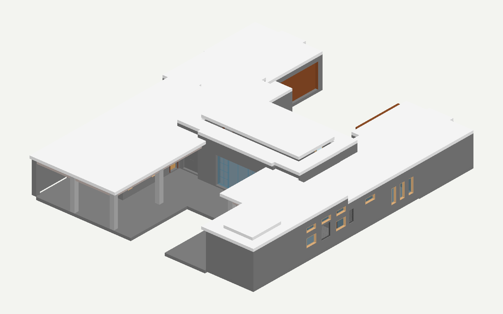

待人工检查 · 未登记。人工确认后才进入 accepted 流程。

请修复这个 IFC2X3 文件中墙体 2CsmzAChHF6O6maGXlo6PS 的实例属性关联。该墙的几何、Type、材料、颜色和其他对象均须保留。请按下述明确要求写入实例 Pset_WallCommon：Reference 为字符串 "240"，IsExternal 为布尔 true，ExtendToStructure 为布尔 false，LoadBearing 为布尔 false。上述属性值也可在输入 IFC 尚存的独立 Pset_WallCommon 属性集中核对；不要修改共享 Type，不要增加其他属性，也不要更改任何几何。请输出修复后的完整 IFC。